The Find
The Find is a location-based recommendation app designed to empower users to find new activities based on their interests and preferences. It provides personalized recommendations as if you are talking to a knowledgeable local of the area that knows exactly what you’re looking for.
Design Process
Research
- Competitive Analysis
- User Interviews
- User Flows
Ideate
- User Personas
- Exploratory Sketching
- Usability Testing
- A/B Testing
Design
- Low, Mid, and High-Fidelity Wireframes
- Style Guide
Iterate
- Retrospective
Research
Competitor Research
During my competitor research, I discovered there are many location-based recommendation apps and travel apps on the market. None of these options were equipped to provide highly personalized activity recommendations for the user.
They also have additional goals such as data collection, trip planning, and advertising. I saw a gap in the market to create a really smooth experience for the user to find activities they would enjoy.
User Interviews
After conducting interviews with 3 potential users, several commonalities began to emerge:
- Maps are commonly used and preferred
- Users have concerns about fake or untrustworthy reviews
- Users want pictures
- Distance, interests, and cost are common deciding factors on what activities they will visit
“I don’t want any decisions made in advance . . . show me all the options”
“I don’t like messy websites”
MVP
- Search for recommendations
- Provide personalized recommendations
- Easily view basic information about recommendations
- Provide a map
User Stories & User Flow Diagram
I created user stories, developed each into a user flow, and combined them into one user flow diagram.
- As a user, I want to search for recommendations, so that I can find specific things I am looking for.
- As a busy person, I want to easily see information such as hours, address, and website of the place, so that I can plan my visit easily.
- As an individual with unique interests, I want personalized recommendations, so that I can discover things I will enjoy.
- As a traveler, I want to have a map, so that I can plan my travel efficiently.
Ideate
User Persona
To guide the design process, I combined what I learned about my users into user personas.
Exploratory Sketching & Low-Fidelity Wireframes
Utilizing the crazy 8 method, I did some exploratory sketching. After exploring several solutions, I created low-fidelity wire frames.

Usability Testing
I used the low-fidelity wireframes to create a prototype in InVision for a usability test. I asked three potential users to complete the following tasks on the low-fidelity prototype:
- Search for and open a recommendation
- Get directions to an activity/recommendation
- Find and filter your personalized recommendation page
The testing revealed four areas of improvement:
- How to get Directions
- Flow of searching for activity
- Navigating to Map
- Finding personalized Recommendations
A/B Testing
The A/B test was designed to find the preferred way for users to navigate to their personalized recommendation page from the explore page.
The A/B testing results showed that 90% of user preferred option 2. Many users indicated that the label & button in option 2 were cleaner looking, easier to understand, and more familiar.
Option1
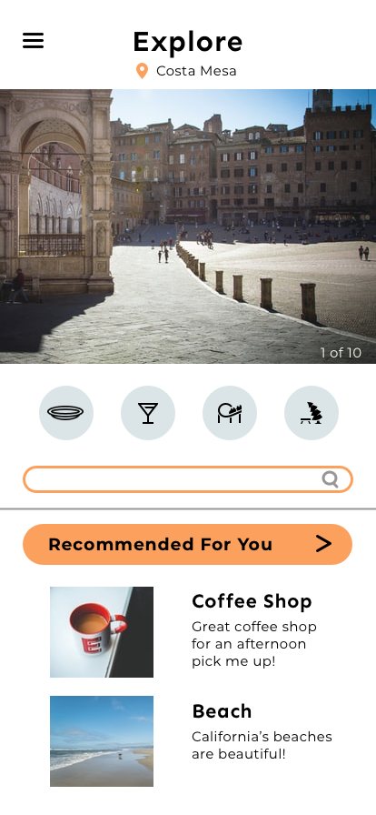Option2
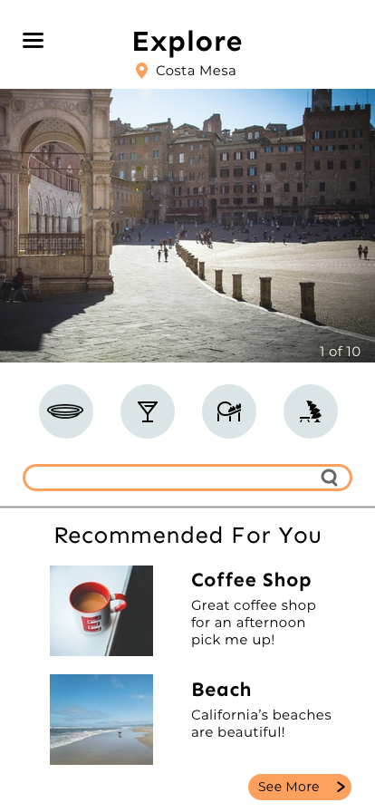Design
Mid-Fidelity Wireframes
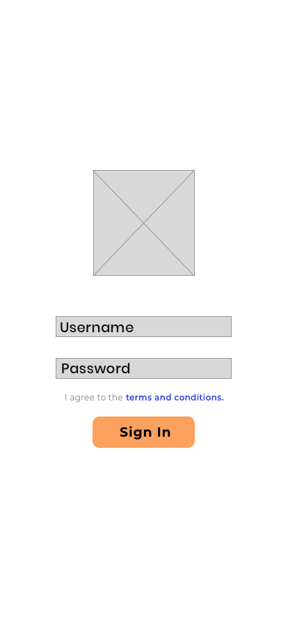 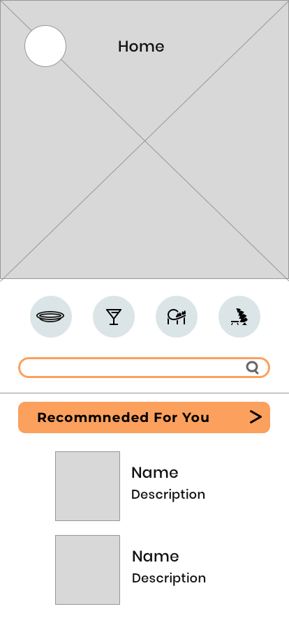 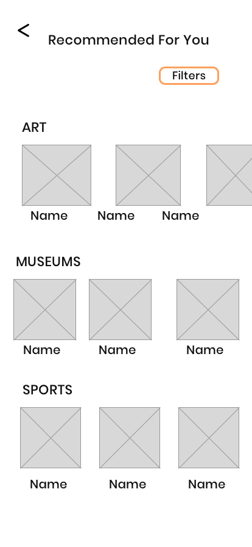 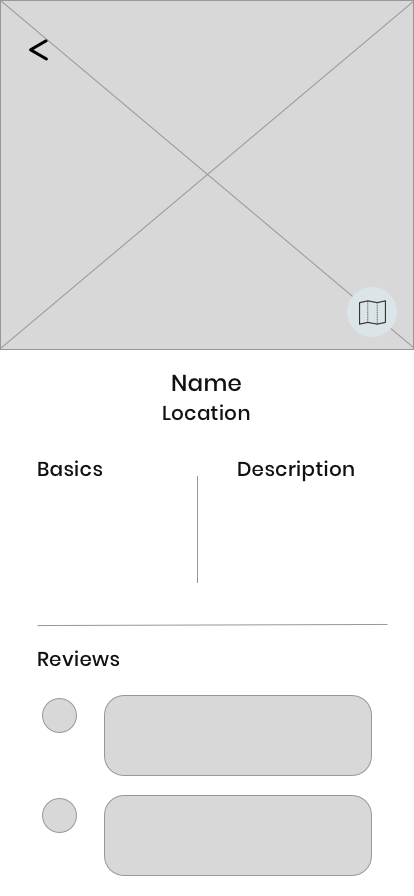 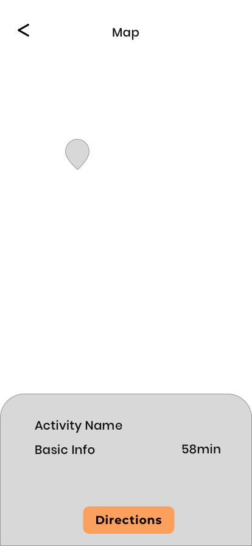Style Guide
After creating my mid-fidelity wireframes, I developed a style guide including typography, color, image styling & more.
High-Fidelity Wireframes
Once I applied the style guide to my mid-fidelity screens, my high-fidelity screens were complete.
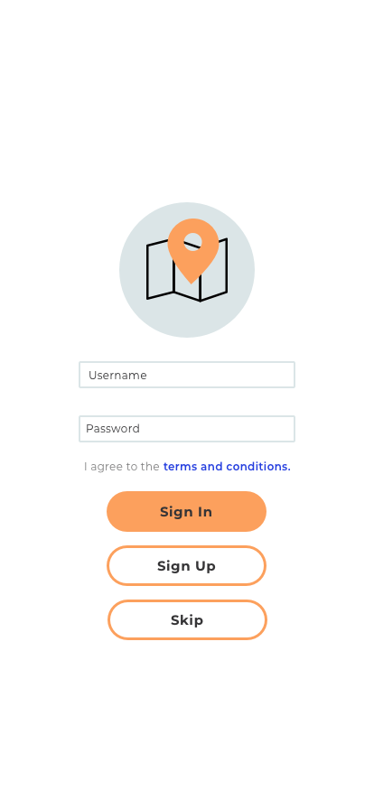 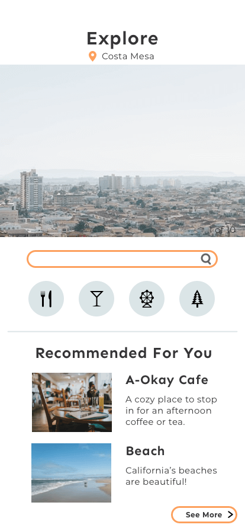 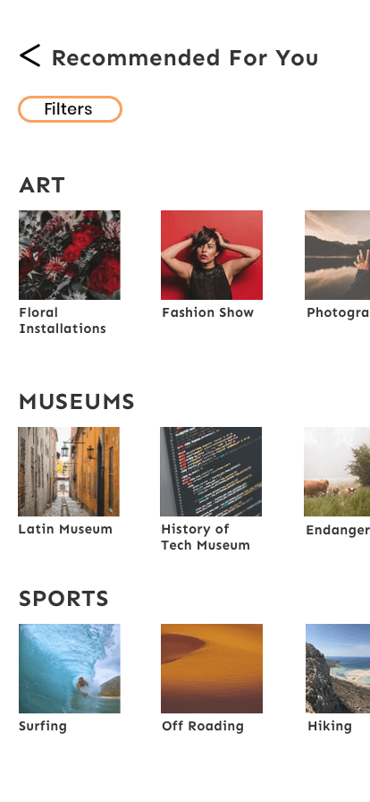 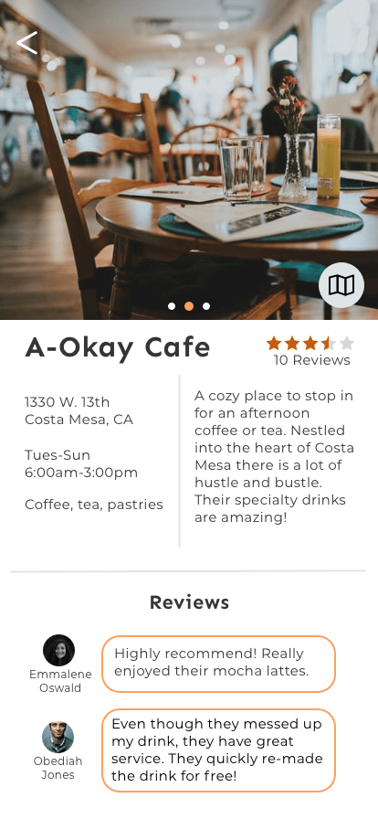 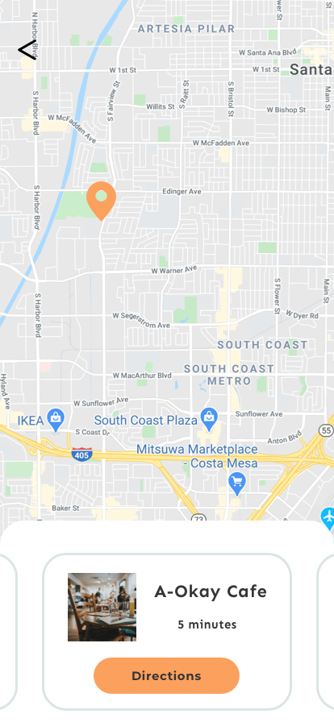Iterate
To identify what went well and areas of improvement for a second iteration, I completed a retrospective.
Retrospective
What Went Well:
- Finding inspiration and translating it to a style guide
- Conducting user interviews to get the perspective of the users
- A/B testing
What Didn't Go Well:
- Iteration of low-fidelity wireframes
- Additional research on design solutions slowed down the design proces
What Can Be Improved:
- Further personalize the app, by improving the sign up and onboarding process
- Ability to view and leave reviews
- Historical & cultural context of each area
Second Iteration Improvements
- esign a sign up process to further personalize the app
- Create review process
- Incorporate historical and cultural information of the location
Mockups